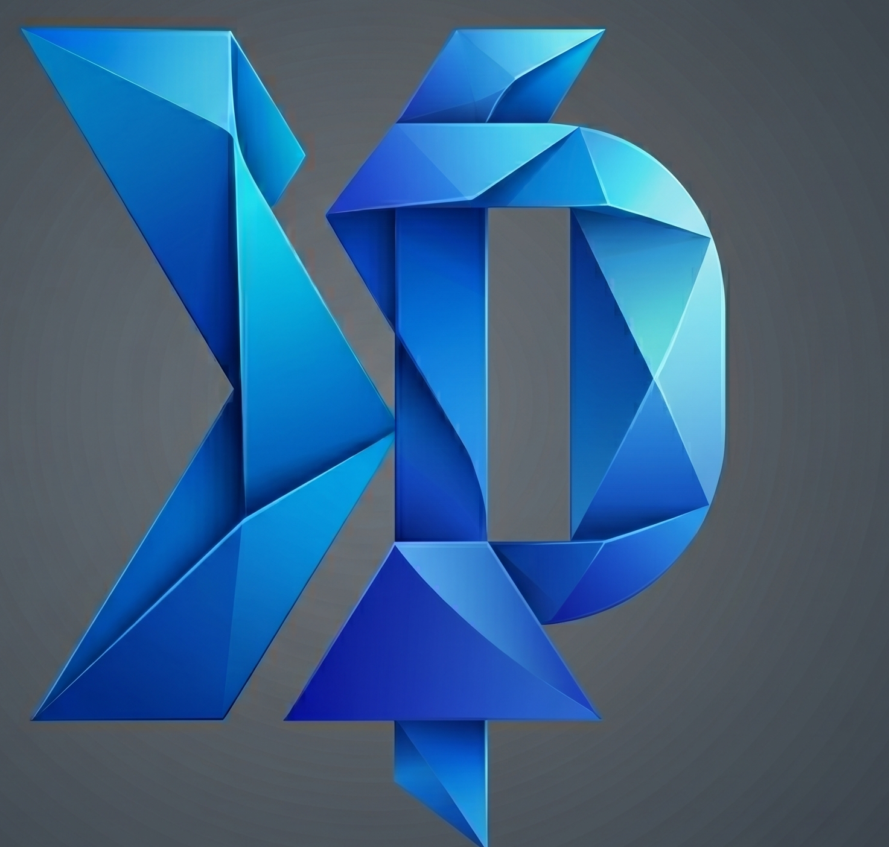

Xtra DevPilot
Connecting...
Connect Again
0
Network Logs
0
Console Logs
Stop Browser Automation
Halt
Developer & QA Tools
Autofill Form Profile
Om Salunke
Record Playwright Test
Start
Scrape Table to JSON
Export
Toggle Layout Debugger
Outlines
Inspect Element for IDE
Select
Manage Extensions
Generated Output:
Copy
Close